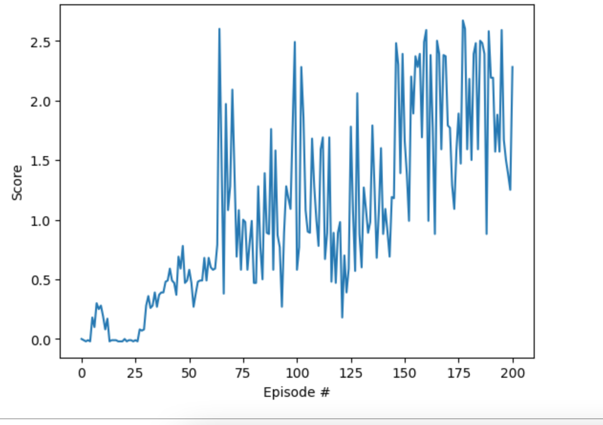

Two rackets share one DDPG actor and critic, so each trains against an opponent that keeps improving.
Single-agent RL, as on the DQN page (a banana-collecting agent) and the DDPG page (the Reacher arm), assumes the world's rules stay fixed while the agent learns. In tennis each racket's world contains the other racket, which keeps learning.
The running example is the TennisGym repo, the collaboration and competition project from Udacity's deep RL nanodegree. A gym, in RL usage, is the environment an agent trains in: it receives actions and returns observations and rewards. This one is built with Unity ML-Agents.
In self-play one DDPG actor and critic play both sides of the net. Self-play gives an opponent that gets harder exactly as fast as the learner improves, but it also makes old experience go out of date: a lesson learned against yesterday's opponent may not hold today.
Both rackets act every step, but learning runs in bursts (Figure 1).
On this page
Figure 2. Each racket reads 8 numbers and outputs 2 actions.
A rally runs until a racket misses: the ball hits the ground or goes out. Each racket sees 8 numbers, the position and velocity of the ball and of itself, and answers with 2 continuous actions, scoot toward or away from the net and jump. The gym stacks three consecutive snapshots, so the actor gets 24 numbers per step and sees how the ball's motion changes across three steps (Figure 3).
The snippet runs one step from Python. brain_name is the key of the rackets in the output of env, states is (2, 24), one row per racket, and the step returns one reward and one done flag per racket.
import numpy as np
N_RACKETS, N_ACTIONS = 2, 2
out = env.reset(train_mode=True)
info = out[brain_name]
states = info.vector_observations
shape = (N_RACKETS, N_ACTIONS)
rand = np.random.uniform
actions = rand(-1, 1, shape)
out = env.step(actions)
info = out[brain_name]
rewards = info.rewards
dones = info.local_doneThe other racket is not in the observation; the ball is the only signal from it. This is partial observability: the agent cannot see what it most needs to predict. The actions are continuous, so the actor-critic method of the DDPG page applies.
Rewards come often, since every return over the net pays 0.1.
One actor and one critic are shared by both rackets. Both rackets' transitions go into one replay buffer. Each racket treats its opponent as part of the environment, even though the same networks control the opponent. This simple setup solved the task (Figure 8).
The two sides improve together: one side returns a few more balls, rallies get longer, the other side learns to return more, and so on. No hand-tuned opponent schedule is needed.
Figure 4. One training step; both rackets share one actor and one critic.
The recipe is DDPG from the DDPG page, with the settings in Figure 5. The actor's tanh keeps both actions in [−1, 1]; the critic takes the 24 observations plus the 2 actions. Both networks use batch norm, which keeps each layer's inputs on a steady scale, and gradient clipping, which caps each update; the critic also uses weight decay, a small pull of every weight toward zero. Both learn against target networks, slow copies of the actor and critic.
| Setting and repo value | Raising it | Lowering it |
|---|---|---|
| Layers actor 256, 256, 128, tanh; critic 256, 256, 1 | more capacity, slower | cheaper, may underfit |
| Replay buffer 1,000,000 | more varied, older opponents | fresher opponents, batches alike |
| Batch 128 | steadier, more compute | cheaper, noisier |
| Updates 128 per 64 steps | more reuse; overfits stale steps | cheaper, slower |
| Actor learning rate 2e-4 | faster; can outrun the critic | steadier, slower |
| Critic learning rate 8e-4, 4 times the actor's | tracks the opponent; can oscillate | steadier, slower |
| Critic weight decay 1e-5 | smaller weights; can underfit | 0 turns it off |
| Discount γ 0.99 | later clears count more | γ = 0 sees only the next reward |
| Target update τ 1e-3 | faster, less stable; τ = 1 copies outright | steadier; τ = 0 freezes them |
| Clip norm 1.5, both networks | larger steps; huge turns it off | steadier, slower |
| OU noise κ 0.1, σ 0.3, ÷ 5 | wider exploration, jumpier play | narrower; 0 stops exploring |
scripts/agent.py.Exploration uses the Ornstein-Uhlenbeck (OU) noise of the DDPG page, so a jump lasts a few steps instead of one. Its κ pulls the noise back toward zero, σ sets the size of each kick, and the repo divides each sample by 5. In the loop, s holds both rackets' states, agent is the shared DDPG agent, noise its exploration noise and buf the one replay buffer both rackets fill, with add and sample(n); learn is the update in Section 8.
import numpy as np
BATCH, LEARN_EVERY, N_UPDATES = 128, 64, 128
max_steps, BREAK_AFTER = 2500, 10
count = 0
for t in range(max_steps):
a = agent.act(s)
a = a + noise.sample() / 5
a = np.clip(a, -1, 1)
out = env.step(a)
info = out[brain_name]
s2 = info.vector_observations
r = info.rewards
d = info.local_done
rows = zip(s, a, r, s2, d)
for row in rows:
buf.add(*row)
s = s2
ready = len(buf) >= BATCH
due = t % LEARN_EVERY == 0
if due and ready:
for _ in range(N_UPDATES):
b = buf.sample(BATCH)
learn(b)
if np.any(d):
count += 1
if count > BREAK_AFTER:
breaka is (2, 2), one row per racket. The repo clips first and adds the noise after, so its actions can leave [−1, 1].LEARN_EVERY steps, runs N_UPDATES updates on random batches.The buffer holds the last million transitions and gains only two per step, so its contents change slowly and most samples come from older versions of the opponent. That steadies learning when the world is fixed and slows adaptation when the opponent changes (Section 3).
A replay buffer assumes past experience previews the future, which held for the DQN banana agent and the DDPG Reacher arm. In tennis, what happens after each shot depends on the other racket, and that racket's policy changes with every update. This is non-stationarity: the world changes while the agent learns it. A lesson such as "hit the ball deep" stops working once the opponent learns to stand deep.
Figure 6. Each racket's improvement changes what the other faces.
Training only on recent transitions would give up the large replay buffer that keeps DDPG stable. Multi-agent RL has other fixes: opponent modeling (predicting the opponent's next move), centralized critics (a critic that sees both rackets' observations and actions during training), and curricula (opponents or tasks that get harder step by step). The repo uses the simplest setup: one shared actor and critic.
Figure 7. Toy curves; the slider sets how fast the opponent learns.

Once rallies start, the score rises fast, because of the reward asymmetry.
Figure 9. In one rally, 5 clears reach 0.5 without the drop, 6 with it.
Figure 10. The trained rackets rallying at test time, with the final policy.
At test time the replay buffer and the critic are not used, and the repo turns the OU noise off (add_noise=False in Tennis.ipynb). Only the actor runs, in eval mode, with no gradients; each action comes out in [−1, 1].
actor.eval()
with torch.no_grad():
obs = torch.as_tensor(states)
obs = obs.float()
a = actor(obs).numpy()
out = env.step(a)
info = out[brain_name]a is (2, 2), one row per racket.The shared agent is a DDPG agent whose buffer receives two transitions per step, with the settings in Figure 5 (TennisGym, scripts/agent.py). Each update costs two target forward passes, a critic forward and backward pass, an actor pass through the critic, and two weight blends; 128 updates every 64 steps is 2 per environment step.
learn is one shared update on a batch from the common buffer. It is the DDPG update with the repo's gradient clipping on both networks.
import torch
import torch.nn.functional as F
import torch.nn.utils as U
GAMMA, TAU, CLIP = 0.99, 1e-3, 1.5
tgts = actor_target, critic_target
nets = actor, critic
def soft_update(tgt, live):
dst = list(tgt.parameters())
src = list(live.parameters())
with torch.no_grad():
for t, p in zip(dst, src):
t.lerp_(p, TAU)
@torch.no_grad()
def td_target(r, s_next, done):
a2 = actor_target(s_next)
q2 = critic_target(s_next, a2)
keep = 1 - done
return r + GAMMA * q2 * keep
def learn(batch):
s, a, r, s_next, done = batch
y = td_target(r, s_next, done)
q = critic(s, a)
critic_loss = F.mse_loss(q, y)
critic_opt.zero_grad()
critic_loss.backward()
w = critic.parameters()
U.clip_grad_norm_(w, CLIP)
critic_opt.step()
q = critic(s, actor(s))
actor_loss = -q.mean()
actor_opt.zero_grad()
actor_loss.backward()
w = actor.parameters()
U.clip_grad_norm_(w, CLIP)
actor_opt.step()
for t, n in zip(tgts, nets):
soft_update(t, n)soft_update.keep is 0 at the end of an episode (the DDPG critic target).Two mistakes to avoid.
MADDPG (Lowe et al., 2017) gives each agent its own actor and its own critic. During training each critic is centralized: it sees every agent's observations and actions, so it can judge one agent's action knowing what the others did. At test time each actor sees only its own observations. This is called centralized training with decentralized execution. The authors' code is openai/maddpg.
The paper argues that Q-learning struggles here because the environment is non-stationary, and that the variance of policy gradients (how much the actor's learning signal varies from batch to batch) grows with the number of agents. It trains each agent as an ensemble, several policies with one picked per episode, so it does not overfit one opponent, and shows coordination on particle-world tasks such as cooperative navigation and predator-prey.
The TennisGym setup is simpler than MADDPG: its critic sees one racket's 24 numbers and 2 actions at a time.
In the DQN, DDPG and self-play setups the reward comes from the environment. What if the reward has to come from people judging which answer is better? The Aligning Language Models with RL page answers it.